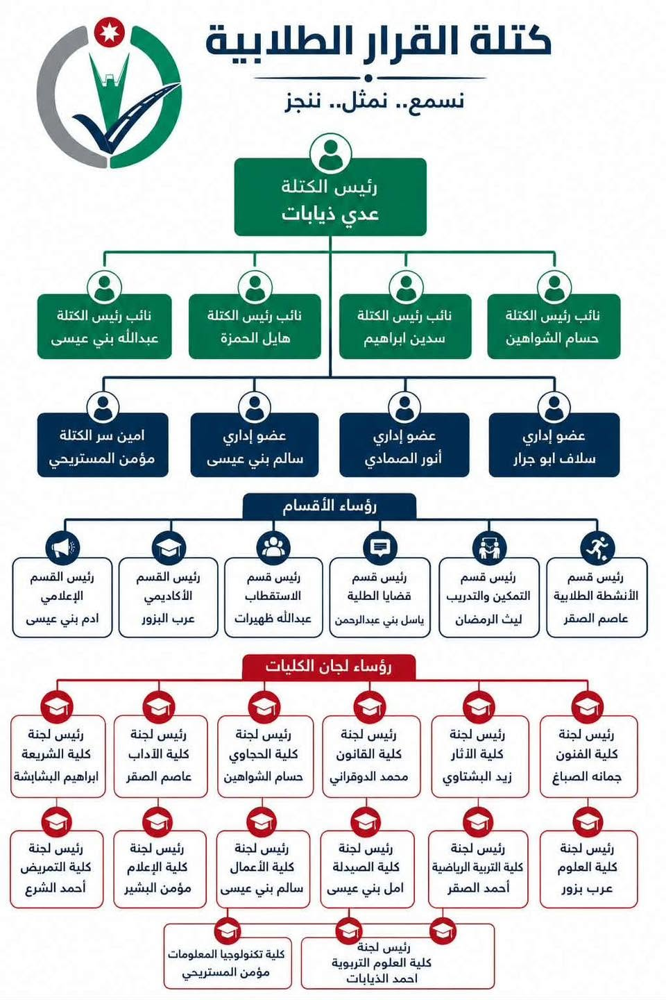

نصنع القرار برؤية طلابية واعدة
منصة كتلة القرار الطلابية؛ بوابتك الشاملة لكل ما تحتاجه أكاديمياً وخدمياً داخل حرم جامعة اليرموك.
كتلة القرار الطلابي: عهد الشباب وخيرُ الأثر... لليرموك وللوطن
كتلة القرار الطلابية إطار طلابي حقيقي داخل جامعة اليرموك، يضم طلبة يؤمنون بأن التجربة الجامعية يجب أن تُبنى على شراكة فعلية بين الطالب والمؤسسة، لا على الشعارات فقط. نحن طاقات شبابية أردنية تنبض بروح الانتماء، نضع أنفسنا في خدمة كل طالب، لأن قناعتنا راسخة بأن العمل الطلابي الحقيقي يبدأ من الميدان وينتهي بتحقيق الأثر.
نحن مُحتضَنون من قِبل حزب مُبادرة، وهو ما يمنح عملنا مظلة سياسية ومؤسسية منظمة دون أن يمسّ ذلك استقلاليتنا في تمثيل الطلبة. وعلى أرض الواقع، نتبنّى مطالب الطلبة كما هي ونوصلها إلى الجهة المعنية داخل الجامعة، ونتابعها حتى تُحل، كما ننظم زيارات ميدانية وتقنية تربط الطالب مباشرة بأصحاب القرار داخل الحرم الجامعي.
ننقل هموم ومقترحات الطلبة لكافة الدوائر والإدارات الجامعية بكل أمانة.
نوفر الخطط الدراسية، الإرشاد، وكل ما يهم مسيرتك الجامعية.
خرائط تفصيلية وتوضيحية لأماكن الكليات والبوابات والمرافق الحيوية.
خريطة جامعة اليرموك
دليل إرشادي مصور لتسهيل تنقل الطلبة والتعرف على أماكن الكليات، المباني الإدارية والمرافق الحيوية.
دليل رموز الكليات والمباني
كل قاعة محاضرات أو امتحان تبدأ برمز مبنى معيّن — استخدم هذا الدليل لتعرف وجهتك بالضبط.
فتح دليل رموز الكليات والمباني
الخطط الشجرية ونبذة عن كليات جامعة اليرموك
اضغط على أي كلية لعرض نبذة تعريفية عنها، أو اضغط على كلية تكنولوجيا المعلومات لعرض نبذتها وتخصصاتها والخطط الشجرية مباشرة:
أبرز النشاطات والإنجازات
توثيق دوري لأبرز القضايا والأنشطة التي تابعتها الكتلة لصالح الطلبة — يُحدَّث أولاً بأول.
نموذج الانتساب لكتلة القرار الطلابية
املأ بياناتك أدناه لتنضم إلى فريق العمل ولنتمكن من التواصل معك.
هيكلة كتلة القرار الطلابية
تعلن كتلة القرار الطلابية عن اعتماد هيكلها التنظيمي العام.
يأتي هذا اعتمادًا على منهجية العمل الإداري المحددة لتوزيع المهام بين رئاسة الكتلة، الأقسام الفنية، ولجان الكليات؛ لضمان سير المتابعات الطلابية بمهنية ووضوح.
الهيئة الإدارية - كتلة القرار الطلابية #نسمع_نمثل_ننجز

الهيكل التنظيمي والإداري الرسمي لكتلة القرار الطلابية
حسابات كتلة القرار على منصات التواصل
تابعنا ليصلك كل جديد من أخبار، إعلانات، وبيانات طلابية رسمية.